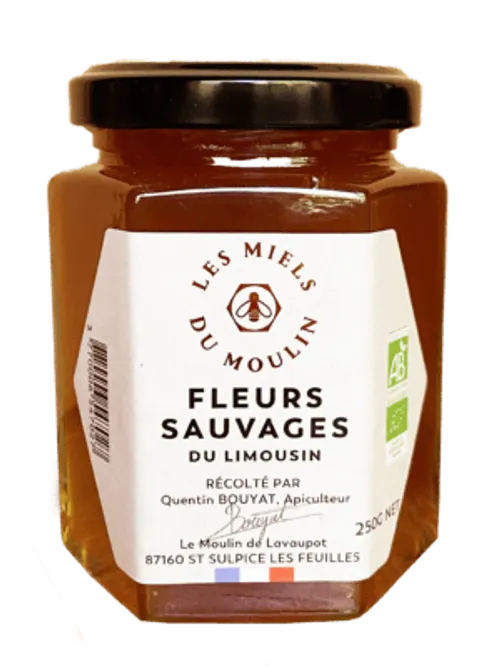
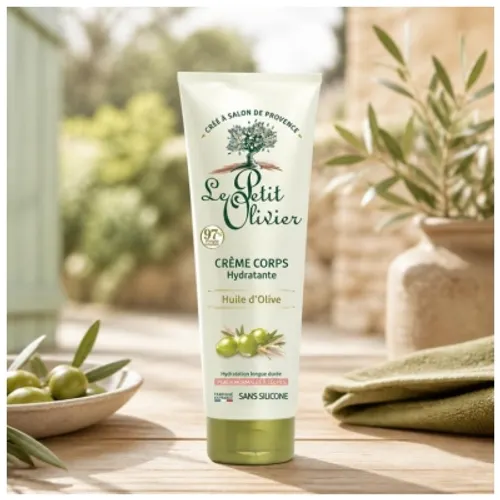

Nos valeurs
Découvrez notre sélection de produits naturels issus du terroir du Rif, préparés avec soin et savoir-faire artisanal.

Miel de fleurs sauvages
Un miel naturel aux arômes floraux délicats, récolté avec soin dans les montagnes du Rif.
75 DH · pot de 500 g

Huile d'olive vierge
Une huile d’olive authentique, riche en saveurs et issue des meilleures olives de la région.
120 DH · bouteille de 1 L

Confiture de figue
Une confiture artisanale préparée à partir de figues soigneusement sélectionnées.
28 DH · pot de 250 g

Crème hydratante à l'huile d'olive
Une formule douce et naturelle pour une peau souple et éclatante au quotidien.
150 DH · pot de 1 L

Huile de pépins de figue de barbarie
Extraite des pépins de figue de barbarie, cette huile précieuse nourrit, protège et sublime naturellement la peau.
30 DH · bouteille de 1 L

Sérum visage à la figue de barbarie
Un sérum naturel qui hydrate, revitalise et aide à préserver l’éclat de la peau.
220 DH · bouteille de 30 ml

Masque visage au miel
Hydrate, nourrit et illumine la peau grâce aux bienfaits du miel.
60 DH · bouteille de 1 L

Crème à la figue de barbarie
Enrichie en figue de barbarie, cette crème apporte confort, hydratation et éclat au quotidien.
95 DH · bouteille de 50 mL

Savon à la figue de barbarie
Enrichi en figue de barbarie, ce savon laisse la peau douce, fraîche et délicatement parfumée.
35 DH · pot de 100 g